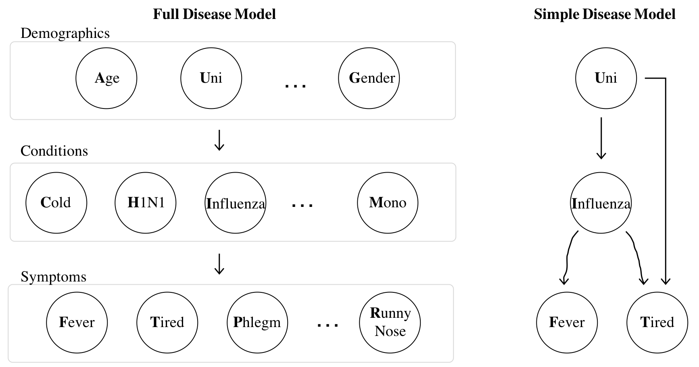

Bayesian Networks
At this point in the reader we have developed tools for analytically solving for probabilities. We can calculate the likelihood of random variables taking on values, even if they are interacting with other random variables (which we have called multi-variate models, or we say the random variables are jointly distributed). We have also started to study samples and sampling.
Consider the WebMD Symptom Checker. WebMD has built a probabilistic model with random variables which roughly fall under three categories: symptoms, risk factors and diseases. For any combination of observed symptoms and risk factors, they can calculate the probability of any disease. For example, they can calculate the probability that I have influenza given that I am a 21-year-old female who has a fever and who is tired: $P(I = 1 | A = 21, G = 1, T = 1, F = 1)$. Or they could calculate the probability that I have a cold given that I am a 30-year-old with a runny nose: $P(C = 1 | A = 30, R = 1)$. At first blush this might not seem difficult. But as we dig deeper we will realize just how hard it is. There are two challenges: (1) Modelling: sufficiently specifying the probabilistic model and (2) Inference: calculating any desired probability.
Bayesian Networks
Before we jump into how to solve probability (aka inference) questions, let's take a moment to go over how an expert doctor could specify the relationship between so many random variables. Ideally we could have our expert sit down and specify the entire "joint distribution" (see the first lecture on multi-variable models). She could do so either by writing a single equation that relates all the variables (which is as impossible as it sounds), or she could come up with a joint distribution table where she specifies the probability of any possible combination of assignments to variables. It turns out that is not feasible either. Why? Imagine there are $N = 100$ binary random variables in our WebMD model. Our expert doctor would have to specify a probability for each of the $2^N > 10^{30}$ combinations of assignments to those variables, which is approaching the number of atoms in the universe. Thankfully, there is a better way. We can simplify our task if we know the "generative" process that creates a joint assignment. Based on the generative process we can make a data structure known as a Bayesian Network. Here are two networks of random variables for diseases:

For diseases the flow of influence is directed. The states of "demographic" random variables influence whether someone has particular "conditions", which influence whether someone shows particular "symptoms". On the right is a simple model with only four random variables. Though this is a less interesting model it is easier to understand when first learning Bayesian Networks. Being in university (binary) influences whether or not someone has influenza (binary). Having influenza influences whether or not someone has a fever (binary) and the state of university and influenza influences whether or not someone feels tired (also binary).
In a Bayesian Network an arrow from random variable $X$ to random variable $Y$ articulates our assumption that $X$ directly influences the likelihood of $Y$. We say that $X$ is a parent of $Y$. To fully define the Bayesian network we must provide a way to compute the probability of each random variable ($X_i$) conditioned on knowing the value of all their parents: $P(X_i = k | \text{Parents of }X_i \text{ take on specified values})$. Here is a concrete example of what needs to be defined for the simple disease model. Recall that each of the random variables is binary: \begin{align*} & P(\text{Uni} = 1) = 0.8 \\ & P(\text{Influenza} = 1 | \text{Uni} = 1) = 0.2 && P(\text{Fever} = 1 | \text{Influenza} = 1) = 0.9 \\ & P(\text{Influenza} = 1 | \text{Uni} = 0) = 0.1 && P(\text{Fever} = 1 | \text{Influenza} = 0) = 0.05 \\ & P(\text{Tired} = 1 | \text{Uni} = 0, \text{Influenza} = 0) = 0.1 && P(\text{Tired} = 1 | \text{Uni} = 0, \text{Influenza} = 1) = 0.9 \\ & P(\text{Tired} = 1 | \text{Uni} = 1, \text{Influenza} = 0) = 0.8 && P(\text{Tired} = 1 | \text{Uni} = 1, \text{Influenza} = 1) = 1.0 \end{align*}
Let's put this in programming terms. All that we need to do in order to code up a Bayesian network is to define a function:
getProbXi(i, k, parents) which returns the probability that $X_i$ (the random var with index i) takes on the value k given a value for each of the parents of $X_i$ encoded by the list parents: $P(X_i = x_i | \text{Values of parents of }X_i)$
Designing a Bayes Net
There are several steps to designing a Bayes Net.
- Choose your random variables, and make them nodes.
- Add edges, often based off your assumptions about which nodes directly cause which others.
- Define $P(X_i = x_i | \text{Values of parents of }X_i )$ for all nodes.
As you might have guessed, we can do step (2) and (3) by hand, or, we can have computers try and perform those tasks based on data. The first task is called "structure learning" and the second is an instance of "machine learning." There are fully autonomous solutions to structure learning—but they only work well if you have a massive amount of data. Alternatively people will often compute a statistic called correlation between all pairs of random variables to help in the art form of designing a Bayes Net.
In the next part of the reader we are going to talk about how we could learn $P(X_i = x_i | \text{Values of parents of }X_i )$ from data. For now let's start with the (reasonable) assumption that an expert can write down these functions in equations or as python: getProbXi.
Next Steps
Great! We have a feasible way to define a large network of random variables. First challenge complete. We haven't talked about continuous or multinomial random variables in Bayes Nets. None of the theory changes: the expert will just have to define getProbXi to handle more values of k than 0 or 1.
A Bayesian network is not very interesting to us unless we can use it to solve different conditional probability questions. How can we perform "inference" on a network as complex as a Bayesian network?